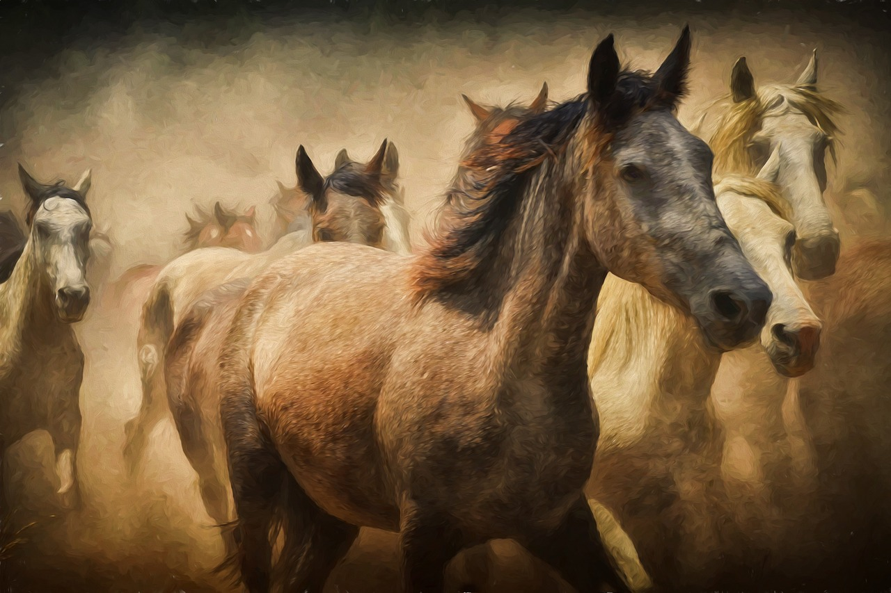
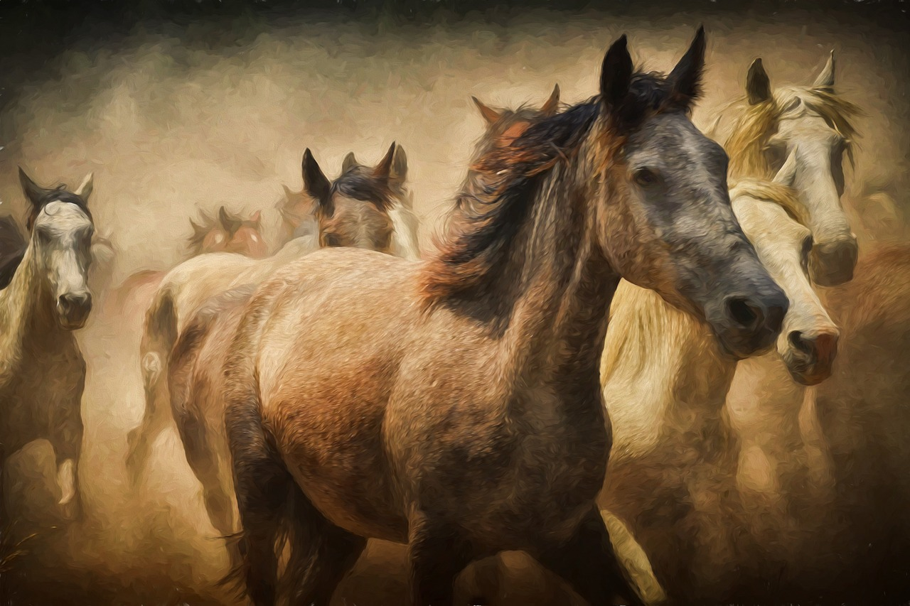

NATÜRMORT
Cansız doğa resimleri anlamına gelen natürmort, en çok tercih edilen resim türlerden biridir. Dalından koparılmış meyvelerden tabaklara, çiçeklerden objelere kadar her şey, natürmort resimlerin konusudur. Kompozisyon, renk ve leke gibi konular da resim çeşitlerinden natürmort için oldukça önemlidir. Natürmort çalışmalarında modeli hazırlamak, resim yapmak kadar önemlidir. Peki, model hazırlarken nelere dikkat etmek gerekir?
- Resim çeşitlerinden natürmortta; modeli göz seviyesine göre hazırlamalıyız.
- Modele uzaklığımız 3, 4 metre arasında olmalı ve fon yapılmalıdır.
- Modelde sıcak renkler çoksa fon için kumaşın rengi soğuk renklerden seçilmelidir.
- Modelde yuvarlak biçimler varsa fonda dik çizgiler olmalı, modelde hareketli çizgiler çoksa fon sade olmalıdır.
- Natürmortta ışık tek bir yerden gelmelidir. Çünkü her yönden alınan ışık, modelin biçim ve renk değerlerini iyi göstermez.
- Model olarak seçilen eşyalar değişik şekillerde olmalıdır.
 
